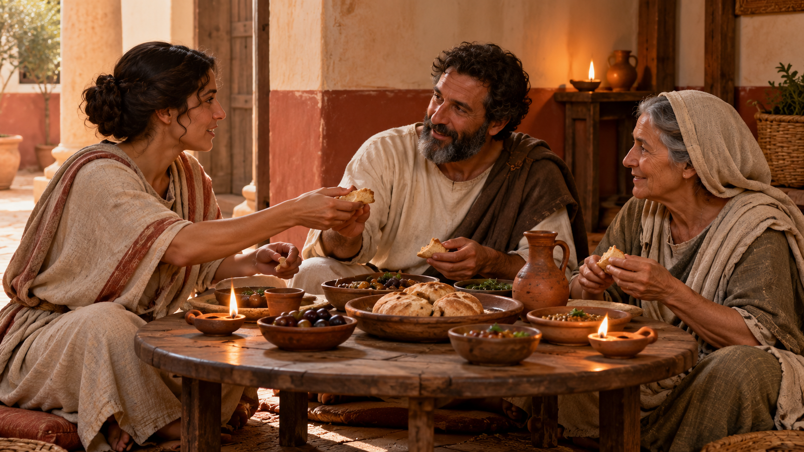
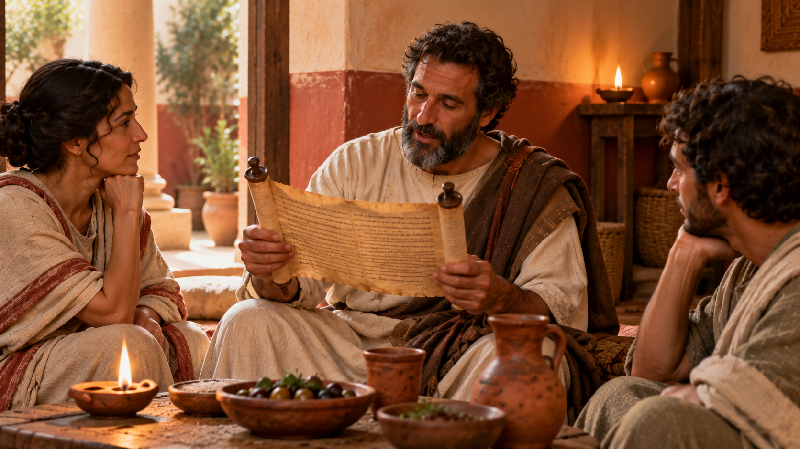
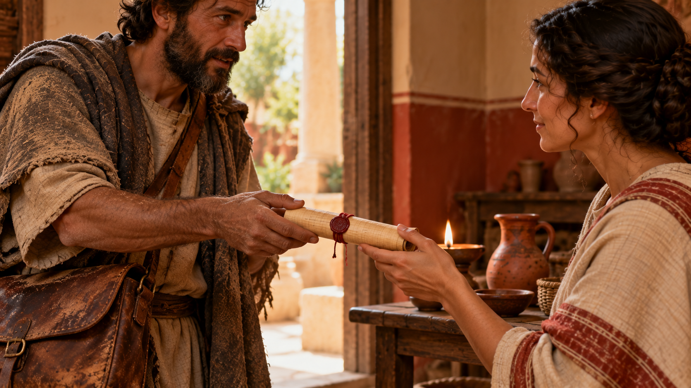
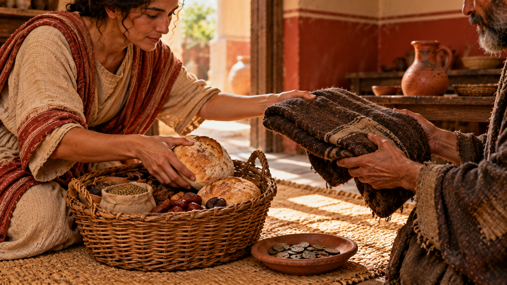
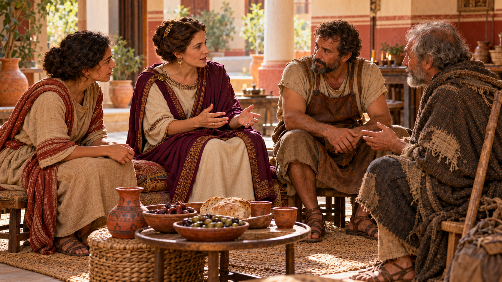
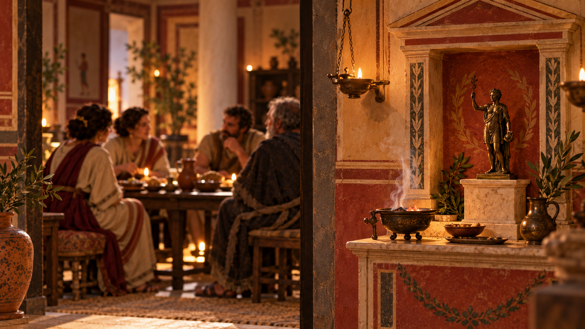

Hospitality, food, and belonging became practices students can investigate.

Reading, teaching, prayer, and discussion formed a shared memory.

Small assemblies belonged to a wider network of travelers, news, and teaching.

Food, clothing, coins, and welcome made conviction visible.

Roman status remained real, but participation could complicate its boundaries.

Explore the house. Collect every clue. Decide what the evidence means.